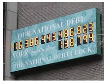

Section 3.5 Large Numbers
Millions and Billions
Multiplying by Powers of Ten
Using Powers of Ten
Scientific Notation
Using a Calculator
Subsection 3.5.1 Millions and Billions
Did you know that the search engine Google is named after the large number one googol? One googol is equal to 10 raised to the 100th power. That is indeed a very large number, as scientists estimate there are "only" about \(10^{80}\) atoms in the whole universe.
Large numbers that are much smaller than one googol can still be hard to visualize. For example:
How much is one million, or 1,000,000 ?
In the figure below there are 1000 blue dots, arranged in 10 blocks of 100 dots each. Now imagine a book with 1000 pages (such as War and Peace, by Leo Tolstoy), and each page contains 1000 blue dots. That book contains one million blue dots.

Thus, one million is a thousand thousands.
Let's review the names of the place values up to one million. As an example, the population of New York City in 2020 was
Covering about 300 square miles of land, New York is the most densely populatd city in the United States, with just over 105.7 square yards of space for each person.

Example 3.5.1.
In January 2023, the population of the United States was over 334,278,000. How do we read that number?
The land area of the United States is 3,806,000 square miles. What is the population density of the United States, in people per square mile?
The population of the United States was about three hundred thirty-four million, two hundrd seventy-eight thousand people.
-
We will divide the population by the land area of the United States.
\begin{equation*} \dfrac{334,278,000 \text{ people}}{3,806,000 \text{ square miles}} = 87.83 \text{ people per square mile} \end{equation*}The population density is about 88 people per square mile.
Checkpoint 3.5.2.
-
Look up the population and land area of your state.
Population:
Land area:
Calculate the population density of your state.
In 2023, the population of California was 40,223,504. Its land area is 163,696 square miles.
About 246 people per square mile.
Activity 3.5.1. How Big Is a Billion?
Here are three ways to think about the size of one billion.
-
Suppose you want to count to one billion, saying one number per second.
How many minutes will it take you to count to 1000?
How many minutes will it take you to count to one million? How long is that in days?
How many days will it take you to count to one billion? How long is that in years?
-
A stack of 100 one-dollar bills is 0.43 inches or 1.1 centimeters high.
How high is a stack of 1000 one-dollar bills, in inches?
How high is a stack of one million one-dollar bills, in inches? How high is that in feet?
How high is a stack of one billion one-dollar bills, in feet? How high is that in miles?
-
The length of a one-dollar bill is 6.14 inches.
How long is a string of 1000 one-dollar bills, laid end to end? How far is that in feet?
How long is a string of one million one-dollar bills, in feet? How far is that in miles?
How long is a string of one billion one-dollar bills, in miles?
The distance around the Earth is 24,880 miles. How many times would a string of one billion one-dollar bills circle the Earth?
These days, when the national debt is measured in trillions of dollars, even larger numbers are commonplace.
| Name | Numeral |
|---|---|
| Million | 1,000,000 |
| Ten Million | 10,000,000 |
| Hundred Million | 100,000,000 |
| Billion | 1,000,000,000 |
| Ten Billion | 10,000,000,000 |
| Hundred Billion | 100,000,000,000 |
| Trillion | 1,000,000,000,000 |
| Ten Trillion | 10,000,000,000,000 |
| Hundred Trillion | 100,000,000,000,000 |
| Quadrillion | 1,000,000,000,000,000 |
| Ten Quadrillion | 10,000,000,000,000,000 |
| Hundred Quadrillion | 100,000,000,000,000,000 |
Note 3.5.3.
Each number name comes in groups of three (one million, ten million, hundred million), so one billion is 1000 millions, and one trillion is 1000 billions, etc. Other countries use a slightly different naming system.
And after quadrillions come quintillions, sextillions, and .... We're going to need a better way to keep track of all those zeroes!
Subsection 3.5.2 Multiplying by Powers of Ten
People who deal with information often encounter very large numbers in their work. For instance, the nearest star to our solar system is Proxima Centauri, a faint, reddish star at a distance of approximately

Economists work with figures like the national debt, which has surpassed

Calculations with such large numbers can be difficult. Most calculators have only an eight- or ten-digit display, so numbers in the trillions cannot even be entered. To get around this problem, we write numbers with a special notation that uses powers of ten.
Activity 3.5.2. Powers of Ten.
Compute each product.
\(\displaystyle 35 \times 10\)
\(\displaystyle 35 \times 100\)
\(\displaystyle 35 \times 1000\)
\(\displaystyle 35 \times 10,000\)
\(\displaystyle 0.064 \times 100\)
\(\displaystyle 0.064 \times 10,000\)
\(\displaystyle 0.064 \times 1,000,000\)
\(\displaystyle 0.064 \times 100,000,000\)
-
What do you notice about the products above? Can you state a shortcut for multiplying a number by a power of 10?
Short-Cut Rule:
-
Try your shortcut on the following products, then check by multiplying.
\(\displaystyle 275 \times 100\)
\(\displaystyle 0.08 \times 100,000\)
\(\displaystyle 13.7 \times 1000\)
\(\displaystyle 0.126 \times 10\)
In the Activity, we discovered the following fact:
To multiply a number by a power of ten, we move the decimal point to the right.
For example, you can check that

The product is three-hundred sixty-two thousand.
When we write the power of ten with an exponent, we can state the rule more precisely.
To multiply a number by a power of ten.
Move the decimal point to the right the same number of places as the exponent on ten.
Write in zeros to fill any empty places at the end of the new number.
Example 3.5.4.
Compute each product.
-

The product is two billion, eight hundred million.
-

The product is one hundred seventy.
Note 3.5.5.
When you write your answer, don't forget to insert commas at the proper locations, before every third digit from the right-hand end. This partitions the number into thousands, millions, billions, and so on, and makes it easier to read.
Checkpoint 3.5.6.
Compute each product, then write your answer in words.
\(\displaystyle 1.23 \times 10^5\)
\(\displaystyle 1.23 \times 10^2\)
\(123,000 \text{,}\) one hundred twenty-three thousand
\(123 \text{,}\) one hundred twenty-three
Note 3.5.7.
The rule for multiplying by a power of ten is not \(\alert{\large{\text{MAGIC}}}~~~\text{.}\) It follows from the fact that our number system is based on powers of ten: each place value is 10 times the place to its right.
Subsection 3.5.3 Using Powers of Ten
We can also reverse the process and write numbers with powers of ten. For example,
and
We figure out what power of ten to use by counting backwards to the new location of the decimal.
Example 3.5.8.
Find the correct power of ten.
\(\displaystyle 358,000 = 35.8 \times 10^{\fillinmath{XXX}}\)
\(\displaystyle 19,760,000 = 1.976 \times 10^{\fillinmath{XXX}}\)
-
Counting backwards to the new location of the decimal, we see that we must move the decimal point 4 places.

Therefore, we need an exponent of \(\alert{4}\) for 10. Thus,
\begin{equation*} 358,000 = 35.8 \times 10^{\alert{4}} \end{equation*} -
Counting backwards to the new location of the decimal, we see that we must move the decimal point 7 places.

We need an exponent of \(\alert{7}\) for 10.
\begin{equation*} 19,760,000 = 1.976 \times 10^{\alert{7}} \end{equation*}
Checkpoint 3.5.9.
Find the correct power of 10.
\(\displaystyle 1200 = 1.2 \times 10^{\fillinmath{XXX}}\)
\(\displaystyle 12,000,000 = 1.2 \times 10^{\fillinmath{XXX}}\)
\(\displaystyle 3\)
\(\displaystyle 7\)
Subsection 3.5.4 Scientific Notation
Which number below is larger?
Perhaps you began by counting the number of digits in each number. By doing so, you are really comparing powers of 10 : are the numbers in the millions, the billions, or ... ?
Here is a way to count digits using powers of 10:
Write each number so that it begins with a factor between one and ten.
To do this, we first move the decimal points as shown:

Then we count the number of places we moved the decimal point in each number, to find the correct power of ten:
Now it is easy to see that the second number is larger.
This method for writing large numbers is called scientific notation.
To write a number in scientific notation.
Move the decimal point so that there is only one (non-zero) digit to the left of the decimal.
Multiply by a power of ten, where the exponent on ten is the number of places you moved the decimal.
Regular numbers are said to be in standard notation.
Example 3.5.10.
Write in scientific notation.
245.3
38,200,000,000
-
The decimal goes after the 2.
\begin{equation*} 245.3 = 2.453 \times 10^2 ~~~~~~~~ \blert{\text{Move the decimal 2 places.}} \end{equation*} -
The decimal goes after the 3.
\begin{equation*} 38,200,000,000 = 3.82 \times 10^{10}~~~~~~~~ \blert{\text{Move the decimal 10 places.}} \end{equation*}
Checkpoint 3.5.11.
Write in scientific notation.
98,700,000,000
98.7
\(\displaystyle 9.87 \times 10^{10}\)
\(\displaystyle 9.87 \times 10^1\)
Subsection 3.5.5 Using a Calculator
You can use scientific notation to enter very large numbers in your calculator. First, look for a key labeled \(\boxed{\text{EE}}\) or \(\boxed{\text{EXP}}\text{.}\) To enter the number \(2.61 \times 10^8\text{,}\) for example, enter 2.61 as usual. Then press the \(\boxed{\text{EXP}}\) key and enter just the exponent on the power of 10; for our example, we enter 8. The calculator should then display
This is the way most calculators display a number in scientific notation.
Note 3.5.12.
Don't write down \(~2.61\text{E}8~\) instead of \(~2.61 \times 10^8~\) ! Calculator notation is not the same as written notation.
Example 3.5.13.
How many insects are there on Earth? Entomologists estimate that there are 100 million insects per acre of land, and Earth's land area is 36.48 billion acres.
We will write each number in scientific notation, then multiply them together.
100 million = \(10^8\) insects per acre
36.48 billion = \(3.648 \times 10^{10}\) acres
Their product is
(\(10^8\) insects per acre) \(\times\) (\(3.648 \times 10^{10}\) acres) = \(3.648 \times 10^{18}\) insects
That's 3.648 quintillion insects.

Checkpoint 3.5.14.
Astronomers estimate that there are 200 billion stars in the Milky Way Galaxy and 150 billion galaxies in the universe. If each galaxy contains a similar number of stars, how many stars are there in the universe?
Subsection 3.5.6 Vocabulary
scientific notation
standard notation
Exercises 3.5.7 Practice 3.5
Exercise Group.
For Problems 1-12, write each number in standard notation.
1.
\(6 \times 10^4\)
2.
\(9 \times 10^2\)
3.
\(275 \times 10^3\)
4.
\(93 \times 10^5\)
5.
\(48.623 \times 10^2\)
6.
\(17.837 \times 10^3\)
7.
\(7.28 \times 10^{12}\)
8.
\(6.259 \times 10^9\)
9.
\(0.74 \times 10^8\)
10.
\(0.3592 \times 10^4\)
11.
\(0.0000006 \times 10^6\)
12.
\(0.00094 \times 10^{11}\)
Exercise Group.
For Problems 13-20, determine the correct power of 10.
13.
\(113,000 = 113 \times \fillinmath{XXX}\)
14.
\(2,720,000 = 272 \times \fillinmath{XXX}\)
15.
\(5,492,000 = 54.92 \times \fillinmath{XXX}\)
16.
\(60,940,000 = 60.94 \times \fillinmath{XXX}\)
17.
\(2,697.283 = 2.697283 \times \fillinmath{XXX}\)
18.
\(591.57 = 5.9157 \times \fillinmath{XXX}\)
19.
\(643,000,000,000,000,000 = 6.43 \times \fillinmath{XXX}\)
20.
\(1,386,700,000,000,000,000,000,000 = 1.3867 \times \fillinmath{XXX}\)
Exercise Group.
For Problems 21-28, write in scientific notation.
21.
\(3,500,000\)
22.
\(48,900\)
23.
\(27.6\)
24.
\(38.92\)
25.
\(67,520\)
26.
\(83,600,000\)
27.
\(7,920,000,000,000,000,000,000\)
28.
\(60,777,000,000,000,000\)
Exercise Group.
For Problems 29-38, use your calculator and scientific notation to perform the calculations.
29.
\(23,500,000,000 \times 187,000,000\)
30.
\(9,478,000,000 \times 510,000,000,000\)
31.
\(982,000,000,000,000 \div 4,000,000,000\)
32.
\(260,000,000,000,000 \div 52,000,000,000,000\)
33.
\(\dfrac{36,000,000,000 \times 4,800,000}{14,400,000,000,000}\)
34.
\(\dfrac{750,000,000,000 \times 160,000,000,000}{240,000,000,000,000,000}\)
35.
\(\dfrac{7.2 \times 10^{24}}{(1.8 \times 10^{15})(3.2 \times 10^7)}\)
36.
\(\dfrac{2.16 \times 10^{32}}{(6 \times 10^{14})(1.5 \times 10^{12})}\)
37.
\((8 \times 10^{12})^3\)
38.
\((5 \times 10^9)^4\)
Exercise Group.
For Problems 39-42, use scientific notation to make the calculations, and round your answers to two decimal places if necessary.
39.
Light travels at a speed of 186,000 miles per second. How many seconds does it take light to reach the Earth from Proxima Centauri? (See the Lesson to find the distance to Proxima Centauri.) How many days is that?
40.
The population of the United States is approximately 322,106,000. If we divide up the national debt equally among the population, how much is your share? (See the Lesson to find the national debt.)
41.
The mass of the Earth is 13,200,000,000,000,000,000,000,000 pounds and its volume is 38,250,000,000,000,000,000,000 cubic feet.
Write each of these numbers in scientific notation.
What is the density of the Earth, in pounds per cubic foot? (Density is mass divided by volume.)
42.
A one-mile tall stack of bills contains about 19,008,000 bills. In November of 1923 the circulation of Reichsbank marks in Germany was 400,338,326,350,700,000,000. How tall a stack of bills would that make?
43.
Explain the difference between \(3.2^4\) and \(3.2 \times 10^4\text{.}\) Which number is expressed in scientific notation?
Simplify each of the numbers in part (a).
44.
Are \(6.5^2\) and \(6.5\times 10^2\) the same number? Explain why or why not.
45.
Choose the best number for each.
The number of feet in a mile.
The number of days in a year.
The number of seconds in a week.
The number of square feet in a square mile.
46.
Choose the best approximation for each.
The population of the United States.
The height of the tallest mountains, in feet.
The distance from New York to Los Angeles, in miles.
The number of hours in a century.
Exercise Group.
For Problems 47-58, use mental arithmetic to multiply by the decimal fraction.
47.
\(59.6 \times 0.1\)
48.
\(23.48 \times 0.01\)
49.
\(17.65 \times 0.001\)
50.
\(41.9 \times 0.001\)
51.
\(563.7 \times 0.001\)
52.
\(86.9 \times 0.01\)
53.
\(1248 \times 0.01\)
54.
\(3728 \times 0.001\)
55.
\(8 \times 0.0001\)
56.
\(4 \times 0.1\)
57.
\(38.62 \times 0.01\)
58.
\(25.3 \times 0.001\)
59.
The diameter of the Sun is about 1,391,400 kilometers.
What is the radius of the Sun?
What is the volume of the Sun? Write your answer in scientific notation, then in standard notation.
60.
The distance from the Earth to the Sun is abouty 93,000,000 miles.
Write the distance from the Earth to the Sun in scientific notation.
Assuming that theEarth revolves around the Sun in a circular orbit, calculate the distance that the Earth travels around the Sun in one year. Write your answer in scientific notation, then in standard notation.